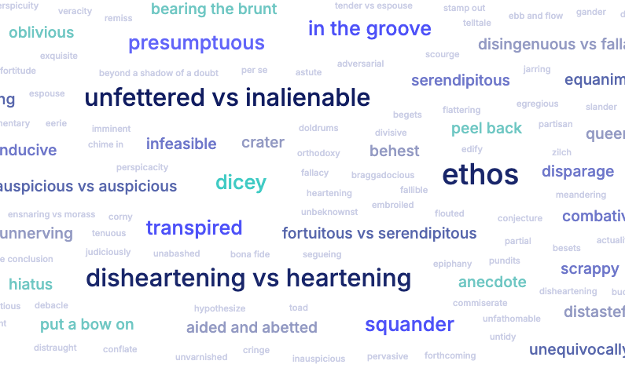

Personal vocabulary, powered by AI
You hear a great word in a podcast. You write it down and forget it. Phrasely fixes that. Capture any phrase, let AI curate it, and watch your vocabulary grow into something you can actually see.
Get started, it's freeType a rough phrase you heard anywhere: a podcast, a book, a conversation. Even just a word and a question mark.
AI polishes it into a natural, memorable sentence with the meaning in context and a usage note you'll actually remember.
Your words live in a personal bubble that grows with you. The more you revisit a word, the bigger it gets. Your vocabulary, made visible.

I'm Cip, from Romania, now living in Australia. For years I collected hundreds of phrases across notebooks, spreadsheets, and notes apps in the hope I could improve my vocabulary. Over the years I realised that collecting wasn't learning.
I wasn't improving my vocabulary, I was building an archive.
Read my full story →"The US government is fretting over (worrying anxiously about) BRICS trading outside of the dollar, and rightly so."